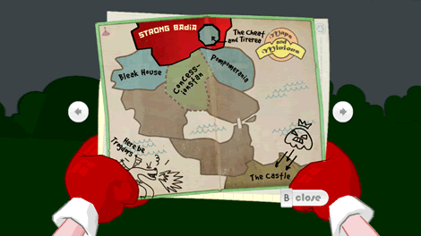
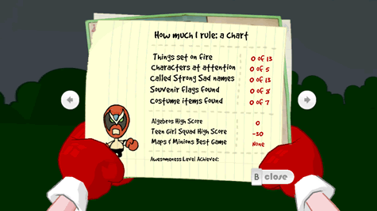
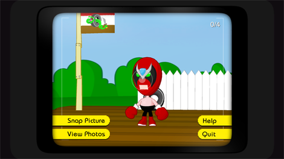

9 |
Bildschirmoberfläche |
 |
Während Sie das Spiel spielen, haben Sie Zugriff auf:
Strong Bads Inventar zeigt, was Strong Bad mit sich trägt. Um einen Gegenstand zu benutzen, der im Inventar ist, wählen Sie ihn aus, indem Sie auf ihn zielen und

Die Karte zeigt die Orte, die du besuchen kannst. Neue Orte werden während des Spiels auf der Karte freigeschaltet, also überprüfe sie regelmäßig! Um einen neuen Ort zu besuchen, musst du auf den freigeschalteten Ort zeigen und 
Zielen Sie auf die Pfeile rechts und links von der Karte, um vor- oder zurückzublättern. Hier sehen Sie eine Grafik, die Strong Bads Abgefahrenheitsstufe anzeigt (sie sind basiert auf Ihre Erfolge im Spiel) und eine Liste aller Sammelgegenstände, die Sie, in der Welt verstreut, gefunden haben. Diese Gegenstände braucht man nicht, um das Spiel zu beenden, aber mit ihnen macht es mehr Spaß. Also werfen Sie ein Auge auf diese Seiten, damit Ihnen nichts von dem, was man alles machen kann, entgangen ist! Um zum Spiel zurückzukehren, zielen Sie auf Close unter der Karte und drücken Sie

Der Foto-Modus erlaubt es Ihnen, fast immer während des Spiels, Bilder zu machen. Dann können Sie folgende Aktionen durchführen:
Sie können diese Bilder mit Leuten auf Ihrer Wii-Freunde-Liste teilen, indem Sie Strong Bad's Laptop benutzen. |


 |
 |
 |